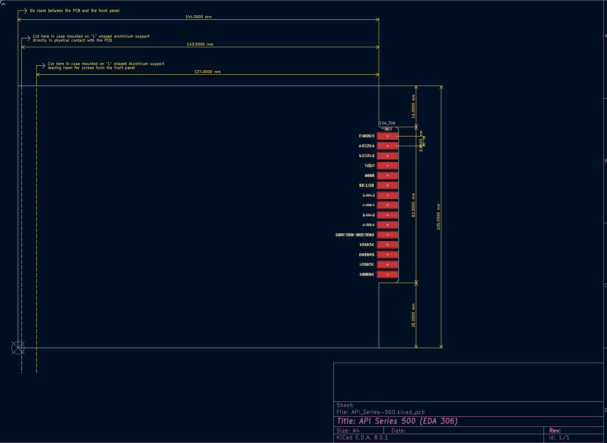
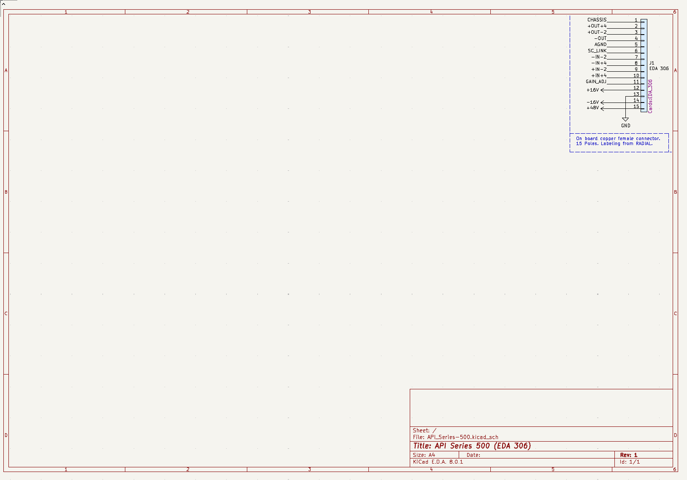

WHAT IS
This project template provides the outline of a standard 3U
API Series 500 Compatible.
Automated Processes, Inc. (A.P.I.) created this standard for audio devices. The board is compatible with the
audio Lunchboxes made by A.P.I. of course, but also the ones made by Radial, MIDAS etc, and
designed for DIY Projects.
The connector is made to fit the EDAC type used into the API Series 500
systems.
INDEX
- External Doc link: API Specs and Sizes
- External Doc link: RADIAL Sizes
- External Doc link: EDAC Connector Series 306
- External Doc link: EDAC Connector Series 316
- External Doc link: EDAC Connector Series 356
- KiCAD API Series 500 Schematics Template
- KiCAD API Series 500 PCB Template
- Credits
6. KiCAD API Series 500 Schematics Template

7. KiCAD API Series 500 PCB Template

Original Author: Tormy Van Cool
Licensed under: CC0
6. CREDITS
Matteo Mazzon: contribution with the correct sizes of the PCB